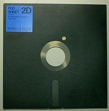

В 1971 году фирмой IBM была представлена первая дискета диаметром в 8 дюймов (200 мм) с соответствующим дисководом.
Конструктивно дискета 8″ (диск диаметром 8 дюймов) представляет собой диск из полимерных материалов с магнитным
покрытием, заключённый в гибкий пластиковый футляр. В футляре имеются отверстия: большое круглое в центре — для
шпинделя, маленькое круглое — окно индексного отверстия, позволяющего определить начало дорожки, и длинное с
закруглёнными концами — для магнитных головок дисковода. Также внизу располагается выемка, сняв наклейку с которой,
можно защитить диск от записи. Форматы дискеты различаются количеством секторов на дорожке. В зависимости от
формата, 8-дюймовые дискеты вмещают 80, 256, 512, 800 и 1200 КБ.
